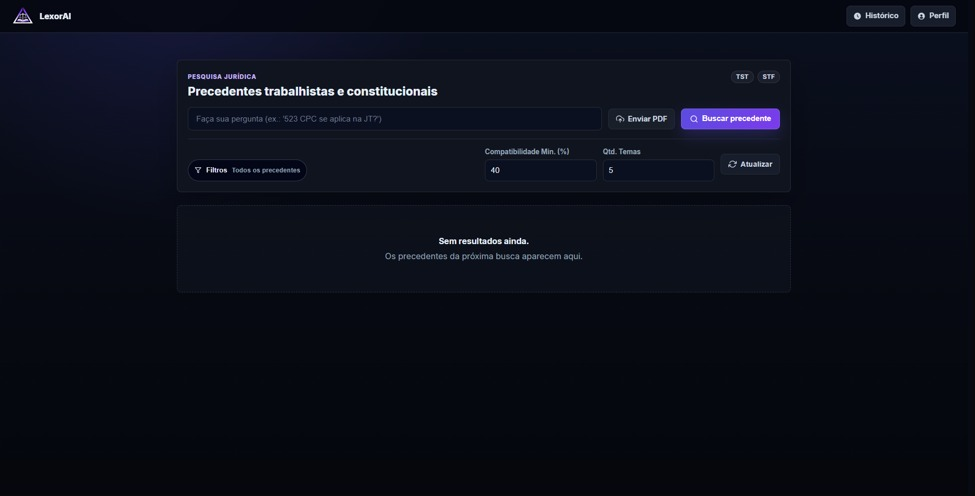
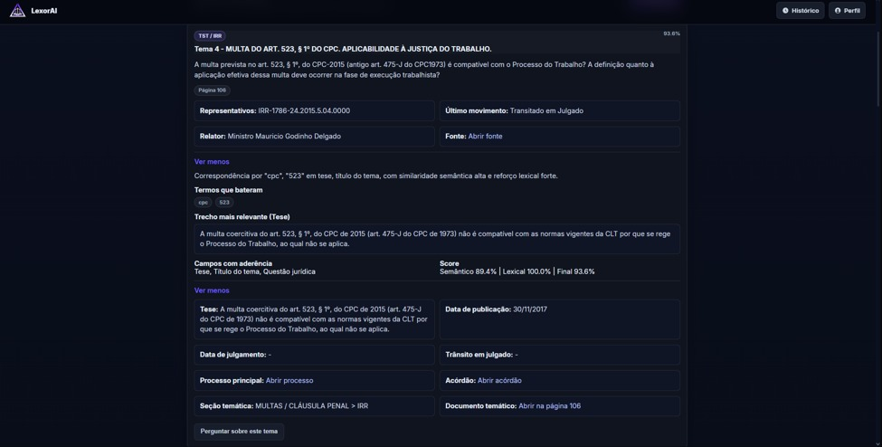
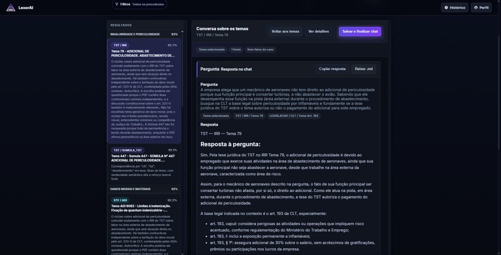
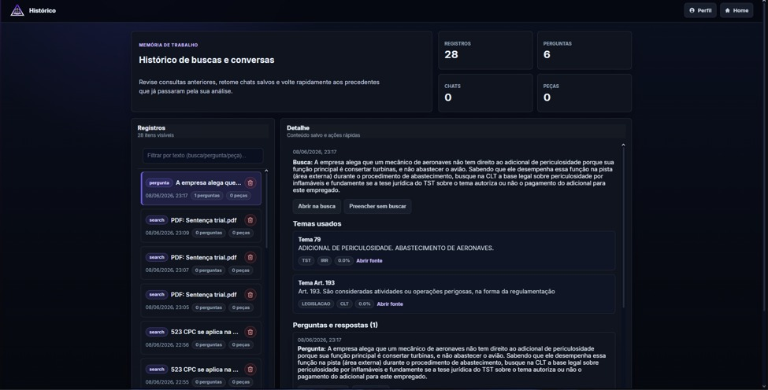

Encontre o
precedente certo
em segundos
Pesquisa de precedentes qualificados do TST e STF em um único fluxo, com ranqueamento explicável e fontes oficiais rastreáveis. A IA organiza e explica; a decisão jurídica permanece humana.
A jurisprudência existe.
Encontrá-la é o problema.
No TST, a pesquisa de precedentes qualificados é crítica para a segurança jurídica, mas vive fragmentada em múltiplas tabelas, fontes, páginas e PDFs. O usuário precisa adivinhar qual termo usar e qual tabela consultar.
Quatro atritos
que custam caro
A busca fragmentada não é só lenta. Ela compromete a segurança jurídica de quatro formas.
Precedentes pertinentes ficam de fora quando estão em outra tabela, formato ou nomenclatura.
Consultas manuais exigem repetir a mesma pesquisa em bases diferentes, uma por uma.
Buscas simplificadas entregam o resultado sem demonstrar por que ele foi considerado aderente.
Inexiste qualquer análise quando o insumo é um PDF ou um texto de busca contextual concreto.
Uma camada de inteligência sobre
fontes
que permanecem verificáveis
Unificar · Recuperar · Explicar
Pesquisa em linguagem natural ou por PDF, sem navegar por tabelas confusas. O sistema normaliza termos, expande expressões e preserva o escopo informado.
Busca textual, vetorial por similaridade e regras de domínio combinadas para elevar a precisão. Cada resultado expõe termos coincidentes e campos aderentes.
Perguntas sobre um tema selecionado ou sobre o conjunto, sempre com as fontes usadas à mostra para conferência humana.
“Pesquisa flexível à forma que o usuário propõe, com resultado baseado nas fontes do banco de dados.”
Da pergunta ao precedente explicado
Pergunta em linguagem natural ou PDF do caso.
Curadoria de termos, escopo e filtros por tipo.
Busca híbrida: texto jurídico + semântica.
Compatibilidade final por campos e trechos.
Temas, fontes oficiais, links e alertas.
Chat contextual sobre tema ou conjunto.
Pergunte. Receba precedentes ranqueados.

Faça a pergunta como pensa, ou envie o documento do caso.
Recorte por tribunal e tipo: IRR, IAC, Súmulas, Repercussão Geral, ADI e mais.
Defina compatibilidade mínima e quantidade de temas retornados.
Por que este precedente apareceu
Quais expressões coincidiram e em que campo: tese, título, questão jurídica.
O trecho mais relevante, com link para o documento e a página.

Converse com os temas encontrados


Pergunte sobre um tema ou sobre o conjunto, sempre com as fontes citadas. O histórico guarda buscas e conversas com retenção controlada, exclusão manual e autoexclusão.
Arquitetura
em camadas
Cada camada tem uma responsabilidade clara, da interface ao processamento assíncrono.
Não é busca por palavra-chave.
É descoberta com justificativa.
Combina aderência semântica e textual, mitigando as falhas da busca puramente lexical. E mostra por que o tema apareceu: quais termos bateram, em que campo e com qual compatibilidade.
Reduz o risco de perder precedentes por consulta fragmentada.
Transforma peças longas em consultas estruturadas e núcleos temáticos.
Links oficiais, página de referência e metadados para análise humana.
Histórico controlado, exclusão manual e autoexclusão por configuração.
Construída para o Judiciário
A solução organiza e sugere; a avaliação jurídica continua com magistrados e servidores. Não decide, não julga, não atribui consequência automática.
Retenção limitada a 30 itens por usuário, exclusão manual e autoexclusão. Cache de PDF com TTL configurável. Baixa a nenhuma retenção.
API empresarial da OpenAI configurada para impedir o uso dos dados processados no treinamento dos modelos.
Menos atrito.
Mais segurança
jurídica.
A LexorAI reduz o tempo de triagem e a insegurança da pesquisa de precedentes, mantendo as fontes verificáveis e a decisão humana no centro.
Aderente à LGPD
Conforme Resolução CNJ 615/2025